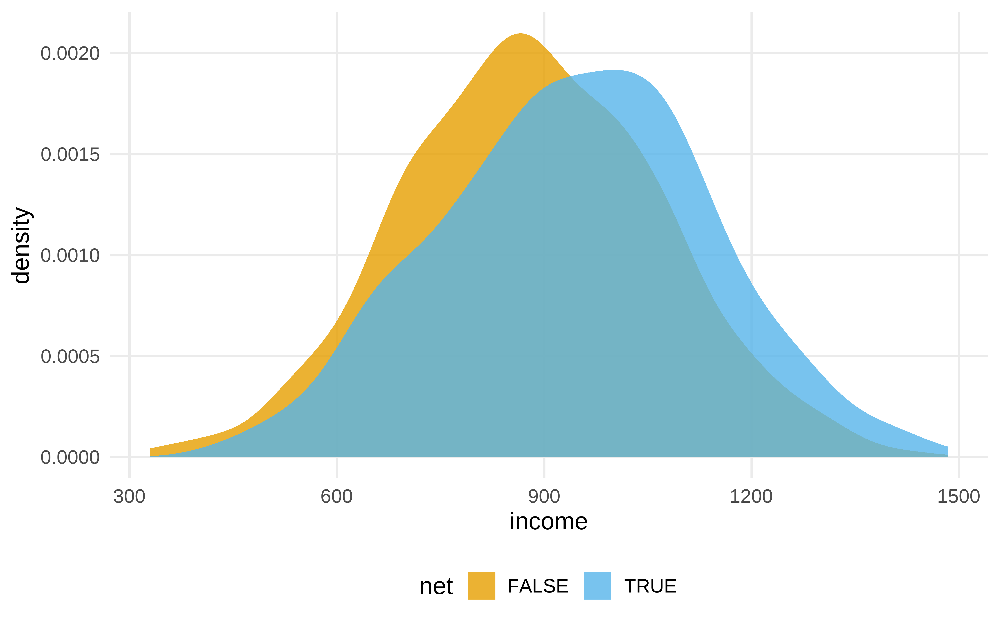

Show the code
#>
#> Adjuntando el paquete: 'ggdag'#> The following objects are masked _by_ '.GlobalEnv':
#>
#> geom_dag_label_repel, theme_dag#> The following object is masked from 'package:stats':
#>
#> filterVeamos un ejemplo completo. No hace falta entenderlo todo. Iremos viendo luego cada parte.
El ejemplo viene de aquí
#>
#> Adjuntando el paquete: 'ggdag'#> The following objects are masked _by_ '.GlobalEnv':
#>
#> geom_dag_label_repel, theme_dag#> The following object is masked from 'package:stats':
#>
#> filterPasos en el análisis causal.
El uso de diagramas causales no es imprescindible, pero ayuda a explicitar las asunciones. Estas asunciones son nuestro modelo de como funcionar las relaciones entre las variables, pero puede que no sean correctas. Siempre habría que chequear el conocimiento experto y confrontar con otras explicaciones.
library(tidyverse)
library(ggdag)
library(ggokabeito)
net_data <- read_csv(here::here("data/net_data.csv"))
mosquito_dag <- dagify(
malaria_risk ~ net + income + health + temperature + resistance,
net ~ income + health + temperature + eligible + household,
eligible ~ income + household,
health ~ income,
exposure = "net",
outcome = "malaria_risk",
coords = list(
x = c(
malaria_risk = 7,
net = 3,
income = 4,
health = 5,
temperature = 6,
resistance = 8.5,
eligible = 2,
household = 1
),
y = c(
malaria_risk = 2,
net = 2,
income = 3,
health = 1,
temperature = 3,
resistance = 2,
eligible = 3,
household = 2
)
),
labels = c(
malaria_risk = "Risk of malaria",
net = "Mosquito net",
income = "Income",
health = "Health",
temperature = "Nighttime temperatures",
resistance = "Insecticide resistance",
eligible = "Eligible for program",
household = "Number in the household"
)
)
p1 <- mosquito_dag |>
tidy_dagitty() |>
node_status() |>
ggplot(
aes(x, y, xend = xend, yend = yend, color = status)
) +
geom_dag_edges() +
geom_dag_point() +
geom_dag_label(color = "black") +
# geom_dag_label_repel() +
scale_color_okabe_ito(na.value = "grey90") +
theme_dag() +
theme(legend.position = "none") +
coord_cartesian(clip = "off")
p1
Dado el DAG anterior, vamos a utilizar una técnica conocida como propensity score weighting. El objetivo de esta técnica es crear una pseudopoblación que imite como habrían sido los datos si se hubiera hecho un RCT (Randomized Controlled Trial).
#> 1 2 3 4 5 6
#> 0.2464 0.2178 0.3230 0.2307 0.2789 0.3060Vemos los ipw. Si una observación ha caído en control pero tiene una probabilidad en el modelo de propensity score de 0.9, su peso es de 1 /(1-0.9) = 10 . Es decir, este individuo se considera un muy buen contrafactual para un individuo de iguales características que hubiera caido en tratamiento.
#> # A tibble: 6 × 4
#> net net_num propensity_score ipw
#> <lgl> <dbl> <dbl> <dbl>
#> 1 FALSE 0 0.475 1.90
#> 2 FALSE 0 0.468 1.88
#> 3 FALSE 0 0.461 1.86
#> 4 FALSE 0 0.451 1.82
#> 5 FALSE 0 0.447 1.81
#> 6 FALSE 0 0.438 1.78#> # A tibble: 6 × 4
#> net net_num propensity_score ipw
#> <lgl> <dbl> <dbl> <dbl>
#> 1 TRUE 1 0.117 8.56
#> 2 TRUE 1 0.120 8.33
#> 3 TRUE 1 0.126 7.92
#> 4 TRUE 1 0.136 7.36
#> 5 TRUE 1 0.138 7.27
#> 6 TRUE 1 0.139 7.19Copia la parte de obtener los peso ipw a partir de las predicciones
¿Qué es lo que ha cambiado al hacer el ipw?
Pero una vez se ha hecho el ipw, la varianza del estimador que da el modelo lm no es correcta, hay que calcularla usando otras técnicas, como estimadores robustos o bootstrap. Usaremos bootstrap
Pensemos como cortar los caminos no causales
p1
Pero la librería dagitty nos sirve para esto
dagitty::adjustmentSets(mosquito_dag, effect = "total")#> { health, income, temperature }ggdag_adjustment_set(mosquito_dag, effect = "total")
net_data |>
ggplot(aes(income, fill = net)) +
geom_density(color = NA, alpha = .8)net_data |>
ggplot(aes(temperature, fill = net)) +
geom_density(color = NA, alpha = .8)
net_data |>
ggplot(aes(health , fill = net)) +
geom_density(color = NA, alpha = .8)
#> This is cmdstanr version 0.8.1.9000#> - CmdStanR documentation and vignettes: mc-stan.org/cmdstanr#> - CmdStan path: /home/jose/.cmdstan/cmdstan-2.35.0#> - CmdStan version: 2.35.0#> Cargando paquete requerido: Rcpp#> Loading 'brms' package (version 2.21.0). Useful instructions
#> can be found by typing help('brms'). A more detailed introduction
#> to the package is available through vignette('brms_overview').#>
#> Adjuntando el paquete: 'brms'#> The following object is masked from 'package:stats':
#>
#> ar#> This is posterior version 1.6.0#>
#> Adjuntando el paquete: 'posterior'#> The following objects are masked from 'package:stats':
#>
#> mad, sd, var#> The following objects are masked from 'package:base':
#>
#> %in%, matchoptions(brms.backend = "cmdstanr")m_bayesian <- brm(
malaria_risk ~ net + income + temperature + health ,
data = net_data,
seed = 48,
chains = 4,
iter = 4000,
warmup = 1000,
cores = 4,
file = here::here("brms_stan_models/net_1"),
file_refit = "on_change"
)
# hqy que evitar el exceso de decimales dando impresión de falsa exactitud
m_bayesian#> Family: gaussian
#> Links: mu = identity; sigma = identity
#> Formula: malaria_risk ~ net + income + temperature + health
#> Data: net_data (Number of observations: 1752)
#> Draws: 4 chains, each with iter = 4000; warmup = 1000; thin = 1;
#> total post-warmup draws = 12000
#>
#> Regression Coefficients:
#> Estimate Est.Error l-95% CI u-95% CI Rhat
#> Intercept 79.36 1.03 77.35 81.39 1.00
#> netTRUE -12.00 0.31 -12.61 -11.39 1.00
#> income -0.08 0.00 -0.08 -0.07 1.00
#> temperature 1.01 0.03 0.94 1.08 1.00
#> health 0.14 0.01 0.12 0.16 1.00
#> Bulk_ESS Tail_ESS
#> Intercept 11125 10282
#> netTRUE 10925 8382
#> income 11593 9652
#> temperature 10913 8132
#> health 11001 9015
#>
#> Further Distributional Parameters:
#> Estimate Est.Error l-95% CI u-95% CI Rhat
#> sigma 5.70 0.10 5.51 5.89 1.00
#> Bulk_ESS Tail_ESS
#> sigma 12498 8777
#>
#> Draws were sampled using sample(hmc). For each parameter, Bulk_ESS
#> and Tail_ESS are effective sample size measures, and Rhat is the potential
#> scale reduction factor on split chains (at convergence, Rhat = 1).round(posterior_summary(m_bayesian, variable = "b_netTRUE"), 2)#> Estimate Est.Error Q2.5 Q97.5
#> b_netTRUE -12 0.31 -12.61 -11.39m_bayesian |>
as_tibble() |>
ggplot() +
ggdist::stat_halfeye(
aes( x = b_netTRUE),
fill = "darkred",
alpha = 0.4) +
ggdist::theme_ggdist()
Y si hubiera una variable de confusión no observada?. Si fuera un RCT, el mismo mecanismo de aleatorización nos protege frente a esas variables, pero no en un estudio observacional.
Imaginemos que existe una variable de confusión que es resistencia genética de la población a la malaria.
Suponemos lo siguiente.
Con la librería tipr se puede inferir cuál sería el efecto si existiera ese confounder no observado.
#>
#> Adjuntando el paquete: 'rsample'#> The following object is masked from 'package:Rcpp':
#>
#> populate# todo el proceso
fit_ipw <- function(split, ...) {
# get bootstrapped data sample with `rsample::analysis()`
.df <- analysis(split)
# fit propensity score model
propensity_model <- glm(
net ~ income + health + temperature,
data = .df,
family = binomial()
)
# calculate inverse probability weights
.df <- .df |>
mutate(
propensity_score = predict(propensity_model, type = "response")
) |>
mutate(
ipw = ifelse(net_num == 1, 1 / propensity_score, 1 / (1 - propensity_score))
)
# fit correctly bootstrapped ipw model
lm(malaria_risk ~ net, data = .df, weights = ipw) |>
tidy()
}
bootstrapped_net_data <- bootstraps(
net_data,
times = 1000,
# required to calculate CIs later
apparent = TRUE
)
ipw_results <- bootstrapped_net_data |>
mutate(boot_fits = map(splits, fit_ipw))
boot_estimate <- ipw_results |>
# intervalo usando percentil
int_pctl(boot_fits, alpha = 0.01) |>
filter(term == "netTRUE")library(tipr)
adjusted_estimates <- boot_estimate |>
select(.estimate, .lower, .upper) |>
unlist() |>
adjust_coef_with_binary(
exposed_confounder_prev = 0.26,
unexposed_confounder_prev = 0.05,
confounder_outcome_effect = -10
)
adjusted_estimates#> # A tibble: 3 × 4
#> effect_adjusted effect_observed
#> <dbl> <dbl>
#> 1 -10.4 -12.5
#> 2 -11.5 -13.6
#> 3 -9.29 -11.4
#> # ℹ 2 more variables:
#> # exposure_confounder_effect <dbl>,
#> # confounder_outcome_effect <dbl>Y después de todo, como los datos son simulados sabemos que existe una variable de confusión
mosquito_dag_full <- dagify(
malaria_risk ~ net + income + health + temperature + insecticide_resistance + genetic_resistance,
net ~ income + health + temperature + eligible + household + genetic_resistance,
eligible ~ income + household,
health ~ income,
exposure = "net",
outcome = "malaria_risk",
coords = list(
x = c(
malaria_risk = 7,
net = 3,
income = 4,
health = 5,
temperature = 6,
insecticide_resistance = 8.5,
eligible = 2,
household = 1,
genetic_resistance = 8.5
),
y = c(
malaria_risk = 2,
net = 2,
income = 3,
health = 1,
temperature = 3,
insecticide_resistance = 2,
eligible = 3,
household = 2,
genetic_resistance = 1
)
),
labels = c(
malaria_risk = "Risk of malaria",
net = "Mosquito net",
income = "Income",
health = "Health",
temperature = "Nighttime temperatures",
insecticide_resistance = "Insecticide resistance",
eligible = "Eligible for program",
household = "Number in household",
genetic_resistance = "Malaria resistance"
)
)
mosquito_dag_full |>
tidy_dagitty() |>
node_status() |>
ggplot(
aes(x, y, xend = xend, yend = yend, color = status)
) +
geom_dag_edges() +
geom_dag_point() +
geom_dag_label_repel() +
scale_color_okabe_ito(na.value = "grey90") +
theme_dag() +
theme(legend.position = "none") +
coord_cartesian(clip = "off")#> Rows: 1,752
#> Columns: 11
#> $ id <int> 1, 2, 3, 4, 5, 6, 7, 8…
#> $ net <lgl> FALSE, FALSE, FALSE, F…
#> $ net_num <int> 0, 0, 0, 0, 0, 0, 0, 0…
#> $ malaria_risk <int> 38, 48, 32, 55, 36, 30…
#> $ income <int> 779, 700, 1083, 753, 9…
#> $ health <int> 35, 35, 58, 68, 46, 37…
#> $ household <int> 1, 3, 3, 3, 5, 3, 1, 2…
#> $ eligible <lgl> FALSE, FALSE, FALSE, F…
#> $ temperature <dbl> 18.3, 18.6, 24.2, 19.1…
#> $ insecticide_resistance <int> 38, 40, 70, 57, 59, 49…
#> $ genetic_resistance <int> 0, 0, 0, 0, 0, 0, 0, 1…fit_ipw_full <- function(split, ...) {
# get bootstrapped data sample with `rsample::analysis()`
.df <- analysis(split)
# fit propensity score model
propensity_model <- glm(
net ~ income + health + temperature + genetic_resistance,,
data = .df,
family = binomial()
)
# calculate inverse probability weights
.df <- .df |>
mutate(
propensity_score = predict(propensity_model, type = "response")
) |>
mutate(
ipw = ifelse(net_num == 1, 1 / propensity_score, 1 / (1 - propensity_score))
)
# fit correctly bootstrapped ipw model
lm(malaria_risk ~ net, data = .df, weights = ipw) |>
tidy()
}bootstrapped_net_data_full <- bootstraps(
net_data_full,
times = 1000,
# required to calculate CIs later
apparent = TRUE
)
ipw_results_full <- bootstrapped_net_data_full |>
mutate(boot_fits = map(splits, fit_ipw_full))
boot_estimate_full <- ipw_results_full |>
# calculate T-statistic-based CIs
int_t(boot_fits) |>
filter(term == "netTRUE")
boot_estimate_full#> # A tibble: 1 × 6
#> term .lower .estimate .upper .alpha .method
#> <chr> <dbl> <dbl> <dbl> <dbl> <chr>
#> 1 netTRUE -11.2 -10.2 -9.32 0.05 student-t#> Family: gaussian
#> Links: mu = identity; sigma = identity
#> Formula: malaria_risk ~ net + income + temperature + health + genetic_resistance
#> Data: net_data_full (Number of observations: 1752)
#> Draws: 4 chains, each with iter = 4000; warmup = 1000; thin = 1;
#> total post-warmup draws = 12000
#>
#> Regression Coefficients:
#> Estimate Est.Error l-95% CI
#> Intercept 79.29 0.90 77.52
#> netTRUE -9.86 0.29 -10.44
#> income -0.08 0.00 -0.08
#> temperature 1.04 0.03 0.98
#> health 0.14 0.01 0.12
#> genetic_resistance -9.52 0.41 -10.31
#> u-95% CI Rhat Bulk_ESS Tail_ESS
#> Intercept 81.03 1.00 10903 9660
#> netTRUE -9.30 1.00 10819 8422
#> income -0.07 1.00 11791 9128
#> temperature 1.10 1.00 10462 8164
#> health 0.16 1.00 11451 8186
#> genetic_resistance -8.71 1.00 9734 8175
#>
#> Further Distributional Parameters:
#> Estimate Est.Error l-95% CI u-95% CI Rhat
#> sigma 4.99 0.08 4.83 5.16 1.00
#> Bulk_ESS Tail_ESS
#> sigma 11168 8306
#>
#> Draws were sampled using sample(hmc). For each parameter, Bulk_ESS
#> and Tail_ESS are effective sample size measures, and Rhat is the potential
#> scale reduction factor on split chains (at convergence, Rhat = 1).round(posterior_summary(m_bayesian_full, variable = "b_netTRUE"), 2)#> Estimate Est.Error Q2.5 Q97.5
#> b_netTRUE -9.86 0.29 -10.44 -9.3posteriores <- as_tibble(m_bayesian_full)
post_rvars <- as_draws_rvars(posteriores)
post_rvars$b_netTRUE |>
enframe() |>
ggplot() +
ggdist::stat_halfeye(
aes( xdist = value),
fill = "darkred",
alpha = 0.4) +
ggdist::theme_ggdist()